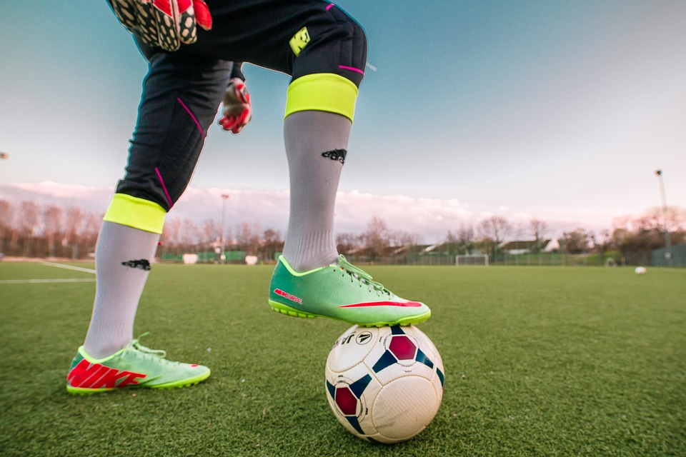

Centro deportivo de PW

Campeones de fútbol 7
El equipo del Centro Deportivo ha ganado el campeonato de fútbol 7. ¡Enhorabuena!
Nuevas cintas de correr
Se han adquirido nuevas cintas de correr para el gimnasio. ¡Pruébalas ya!
Clases de yoga ya disponibles
¡Ya puedes apuntarte a clases de yoga en el Centro! Visita el horario para más información.